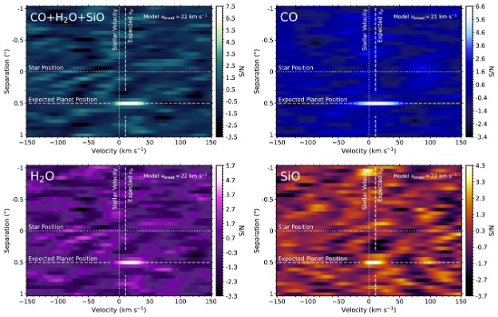
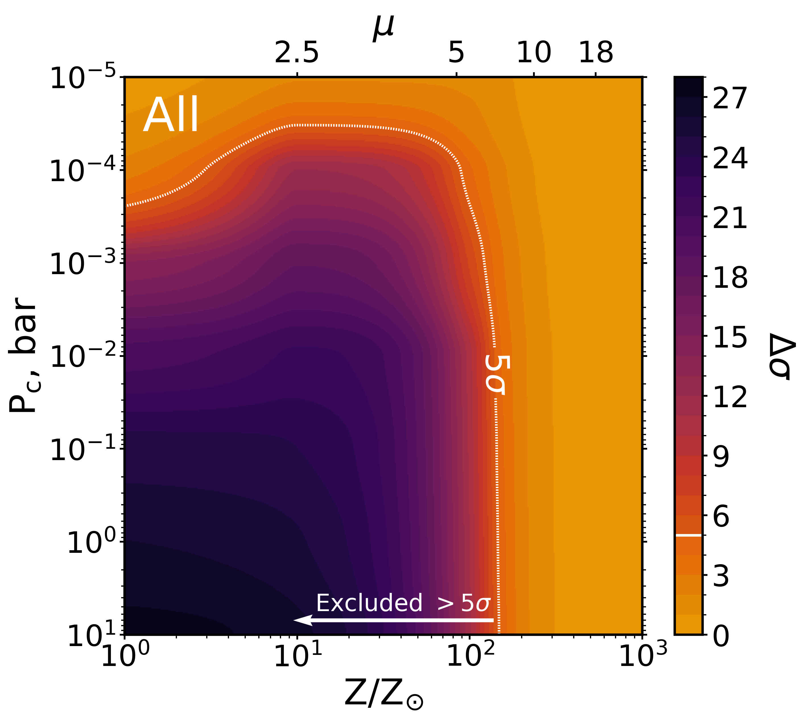
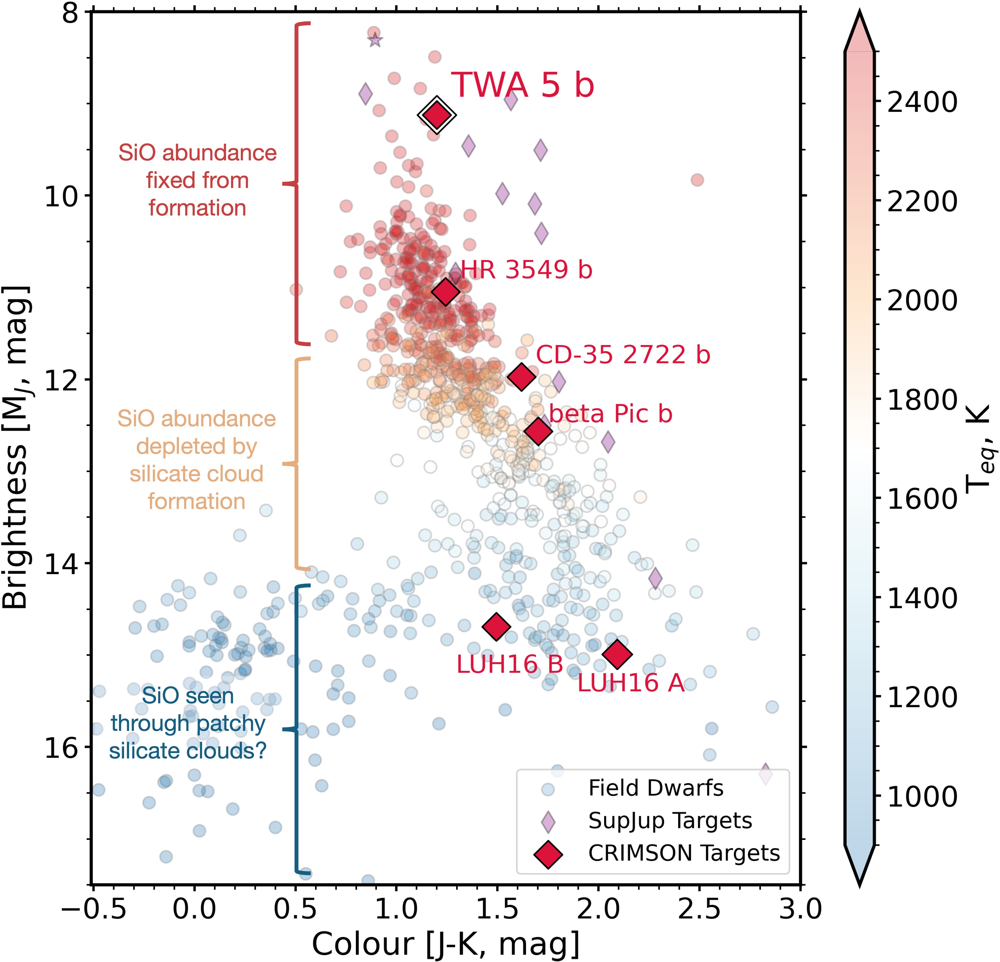

My research aims to characterize the atmospheric composition of extra-solar planets, using the world's largest optical and near-infrared telescopes. To do this, we use the technique of high-resolution cross-correlation spectroscopy (HRCCS), which disentangles the faint planetary spectral features from the glare of the host star and contamination from the Earth's atmosphere. I am particularly interested in developing and leveraging new techniques which will be used by the next generation of ground based telescopes, the Extremely Large Telescopes (ELTs). You can find my past and ongoing research projects and publications below. A full list of my publications can be found on NASA ADS here.
High-resolution cross-correlation spectroscopy (HRCCS) will be used by ELT instrumentation including METIS/ELT, GMTNIRS/GMT, and MICHI/TMT, to target biosignatures on rocky planets at 3-5 μm but was previously untested beyond 3.5 μm, where the sky thermal background dominates the spectra. In this work we carry out 3.51-5.21 μm (M-band) CRIRES+/VLT observations of the archetypal young directly imaged gas giant β Pictoris b, detecting CO and H2O absorption (see left), and thus extending the use of HRCCS into the thermal background noise dominated infrared. We develop custom analysis procedures to mitigate the thermal background and telluric contamination in the M-band.
This work is published in Luke T. Parker, Jayne L. Birkby, Rico Landman, et al., MNRAS, 531, 2356 (2024)
The enigmatic sub-Neptune planets have no solar system analogues and are promising, but unexplored, targets for atmospheric characterization using HRCCS. In this work we observe four CRIRES+ K-band transits of the warm sub-Neptune GJ 3090 b (Teq = 693±18 K). Despite the high quality data and sensitivity to CH4, H2O, NH3, and H2S, we detect no molecular species. Injection-recovery tests are consistent with two degenerate scenarios. First, GJ 3090 b may host a highly metal-enriched atmosphere with > 150 Z⊙ and mean molecular weight > 7.1 g mol-1, representing a volatile dominated envelope with a H/He mass fraction xH/He< 33%, and an unconstrained aerosol layer. Second, the data are consistent with a high altitude cloud or haze layer at pressures < 3.3x 10-5 bar, for any metallicity.
This work is published in Luke T. Parker, João M. Mendonça, Hannah Diamond-Lowe, et al., MNRAS, 538, 3263 (2025)
Linking the present day atmospheric composition of exoplanets to their formation history presents a fundamental challenge. Previous works have targeted atmospheric C/O ratios or 12C/13C isotopologue ratios, but both suffer from degeneracies in the formation positions that they predict. Refractory material however can break these degeneracies and the Si/H, O/Si, and C/Si abundance ratios have been proposed to trace the ratio of ices-to-rocks accreted during the planet's formation. I have used the unique M-band capabilities of CRIRES+ to observe the atmospheres of 6 planetary-mass companions, in which we aim to measure the novel silicon-based abundance ratios. These will provide a sample to benchmark the silicate ratios against the C/O and 12C/13C ratios being measured by the SupJup survey (PI: Snellen), and together place a powerful multi-species constraint on when, where, and how these super-Jupiters formed.
This work is from ESO programme 114.27LL.002, PI: Parker
The marginal signal of gaseous SiO in β Pic b in Parker et al. 2024 (S/N~4) motivated further follow up observations. We aim to confirm or refute the SiO signal, constraining the abundance of SiO, which would enable us to distinguish between cloud compositions and place limits on haze particle sizes.
This work is from ESO programme 113.26UN.001, Co-PIs: Birkby, Parker